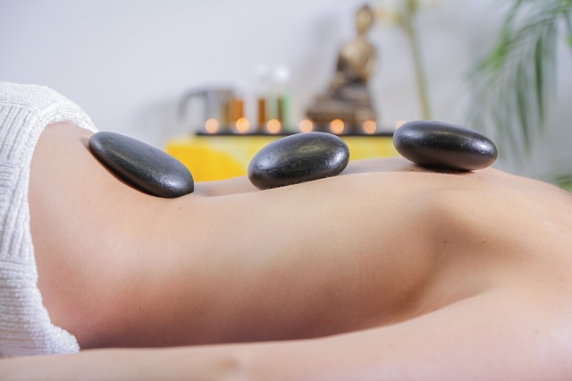
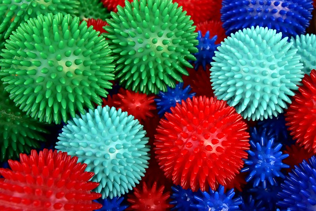
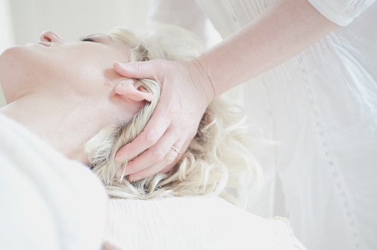

Zabiegi na każdą dolegliwość:
-

Masaż kamieniami
-

Masaż leczniczy
-

Masaż misami dźwiękowymi
-
Masaż z olejkami eterycznymi
-

PIR - Poizometryczna relaksacja mięśniowa
-

Masaż relaksacyjny
-

Masaż stemplami ziołowymi
-

Terapia manualna
Masaż – zabieg fizjoterapeutyczny polegający na sprężystym (nie plastycznym) odkształcaniu tkanek. Masaż – jest to zespół ruchów wywierających ucisk na tkanki i polega on na wykorzystaniu przez masażystę określonych ruchów w określonym tempie i z odpowiednią siłą zgodnie z przebiegiem mięśni, tkanek, naczyń krwionośnych i limfatycznych, od ich obwodu do serca. Masaż powinien być wykonywany rytmicznie, bez rozciągania skóry nieuzbrojoną ręką.Historia masażu wywodzi się ze starożytności, kiedy to był on uzupełnieniem obrzędów religijnych, a z czasem części oddziaływań medycyny ludowej. Zapoczątkowany w Indiach i Chinach, stanowił naturalną metodę leczniczą.
Już Hipokrates, a potem Celsus i Galena wskazywali na wykorzystanie masażu w poszczególnych jednostkach chorobowych. W Starożytnej Grecji masowano sportowców przed zawodami, aby natłuścić ich ciała oliwką. Ponieważ w Średniowieczu nastąpił zastój nauk medycznych, również i masaż przestał być powszechnie stosowany.
W XVI wieku techniką masażu zajął się francuski lekarz Ambroży Paré. W wyniku badań nad fizjologią masażu oraz w oparciu o obserwację pozytywnych skutków masażu u chorych po operacjach, w swojej pracy naukowej ogłosił on masaż jako oficjalną metodę leczenia.Tym samym problemem zajmował się w XVII wieku lekarz Friedrich Hoffman (1600-1672). Opierając się na własnych badaniach i obserwacjach opracował program stosowania masażu w licznych przypadkach